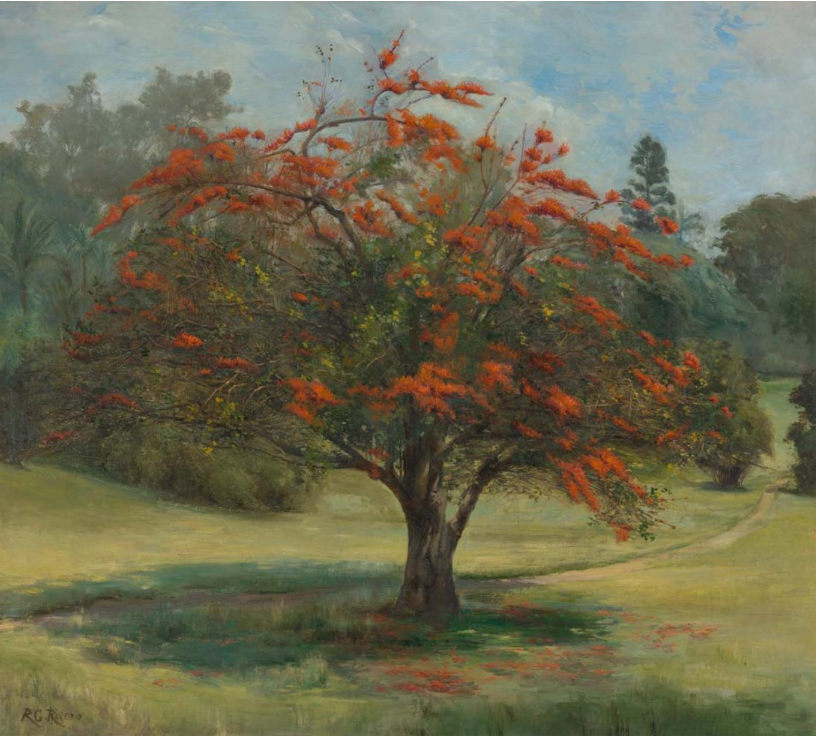

Richard Godfrey Rivers
AN ALIEN IN AUSTRALIA


The work An alien in Australia depicts the introduced 'Flame of the Forest' tree (Butea monosperma, formally known as Butea frondosa), the species native to tropical and sub-tropical parts of the Indian subcontinent and South-East Asia. The tree Rivers painted was planted in Brisbane's Botanical Gardens by Gardens Superintendent Walter Hill (1819-1904) in the 1860s.